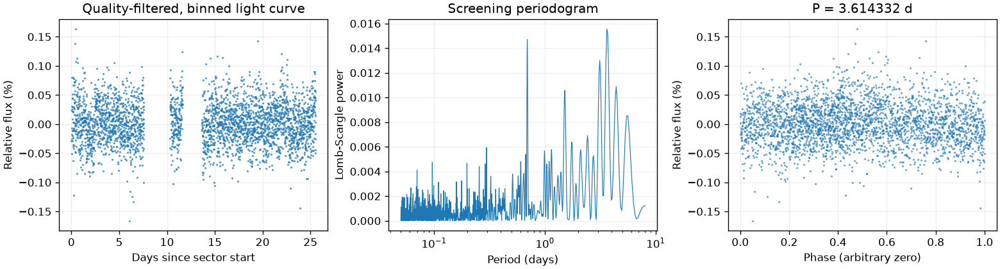
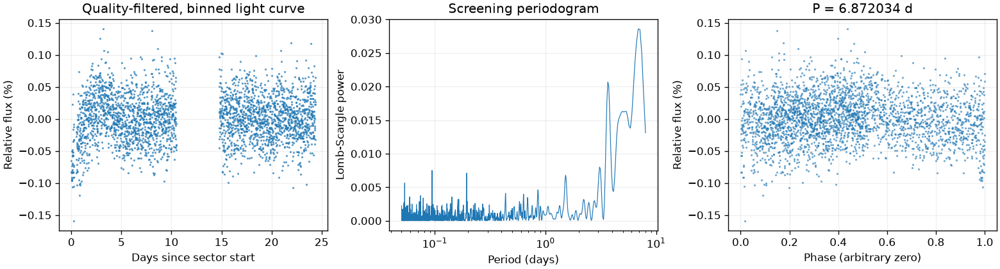
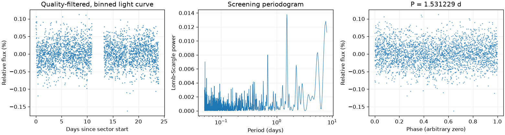

Sector 4 · LS 3.614332 天
BLS 辅助周期：3.608658 天
两种搜索得到相近周期；1% 比较容差不是周期误差。
前半段 LS：3.935070 天；后半段 LS：3.293883 天。
相对幅度估计 0.0216% · 有效点数 14740

Screening peak only; no correlated-noise false-alarm calibration or physical classification.
这是筛选报告，未确认新发现，也不能代替 VSX 提交材料。
图中依次为亮度随时间变化、候选周期强度和折叠后的重复形状。相位零点仅供展示；纵轴是相对通量，不是标定星等。
BLS 辅助周期：3.608658 天
两种搜索得到相近周期；1% 比较容差不是周期误差。
前半段 LS：3.935070 天；后半段 LS：3.293883 天。
相对幅度估计 0.0216% · 有效点数 14740

Screening peak only; no correlated-noise false-alarm calibration or physical classification.
BLS 辅助周期：7.603963 天
两种搜索周期不同，尚未自动决定采用哪一个。
前半段 LS：6.218750 天；后半段 LS：3.257603 天。
相对幅度估计 0.0281% · 有效点数 14033

Screening peak only; no correlated-noise false-alarm calibration or physical classification.
BLS 辅助周期：1.531586 天
两种搜索得到相近周期；1% 比较容差不是周期误差。
前半段 LS：1.529364 天；后半段 LS：7.315390 天。
相对幅度估计 0.0215% · 有效点数 15123

Screening peak only; no correlated-noise false-alarm calibration or physical classification.
{
"ra_deg": 76.6058291388962,
"dec_deg": -63.3832306625945,
"catalog_queries": [
{
"source": "VSX",
"checked_at": "2026-11-10T08:28:29.726869+00:00",
"url": "https://vsx.aavso.org/index.php",
"query": {
"params": {
"view": "api.list",
"ra": 76.6058291388962,
"dec": -63.3832306625945,
"radius": 0.04,
"format": "json"
}
},
"status": "completed",
"match_count": 4,
"note": "VSX neighborhood only; no-match is not novelty confirmation."
},
{
"source": "SIMBAD/VizieR/ADS",
"status": "not_run",
"note": "Requires detailed catalog/literature review; VSX alone is insufficient."
}
],
"vsx_neighbors": [
{
"Name": "Gaia DR3 4664381354439297536",
"RA2000": "76.54854",
"Declination2000": "-63.40282",
"ProperMotionRA": "1.6730",
"ProperMotionDec": "0.1070",
"VariabilityType": "SR|M",
"Period": "51.51",
"MaxMag": "15.06 G",
"MinMag": "15.35 G",
"SpectralType": "M",
"Discoverer": "Gaia collaboration",
"Category": "Variable",
"OID": "3103795",
"Constellation": "Dor",
"sep_arcsec": 116.21217871622318
},
{
"Name": "Gaia DR3 4664381762457643520",
"RA2000": "76.57296",
"Declination2000": "-63.38697",
"ProperMotionRA": "1.5200",
"ProperMotionDec": "-0.2600",
"VariabilityType": "RRAB",
"Period": "0.57723",
"MaxMag": "18.50 G",
"MinMag": "19.39 G",
"Discoverer": "Gaia collaboration",
"Category": "Variable",
"OID": "3104187",
"Constellation": "Dor",
"sep_arcsec": 54.69289255188936
},
{
"Name": "Gaia DR3 4664381899904569472",
"RA2000": "76.57658",
"Declination2000": "-63.36900",
"ProperMotionRA": "1.3940",
"ProperMotionDec": "0.4430",
"VariabilityType": "RRAB",
"Period": "0.63179",
"MaxMag": "18.97 G",
"MinMag": "19.26 G",
"Discoverer": "Gaia collaboration",
"Category": "Variable",
"OID": "3104256",
"Constellation": "Dor",
"sep_arcsec": 69.65023070304304
},
{
"Name": "Gaia DR3 4664378846173320832",
"RA2000": "76.60394",
"Declination2000": "-63.38569",
"ProperMotionRA": "1.7330",
"ProperMotionDec": "-1.4320",
"VariabilityType": "RRAB",
"Period": "0.69229",
"MaxMag": "18.55 G",
"MinMag": "19.17 G",
"Discoverer": "Gaia collaboration",
"Category": "Variable",
"OID": "3104678",
"Constellation": "Dor",
"sep_arcsec": 9.363202866299659
}
],
"notes": [],
"errors": [],
"repeatability": {
"status": "inconsistent",
"fractional_spread": 1.4776739849539628,
"tolerance": 0.05,
"note": "Heuristic screening comparison, not period-error or long-term phase-coherence validation."
},
"localization": null,
"submission": {
"name": null,
"ra_deg": null,
"dec_deg": null,
"coordinate_source": null,
"coordinate_epoch": null,
"variability_type": null,
"period_days": null,
"period_error_days": null,
"epoch": null,
"epoch_time_standard": null,
"epoch_event": null,
"max_magnitude": null,
"min_magnitude": null,
"passband": null,
"magnitude_source": null,
"mean_magnitude": null,
"amplitude_magnitude": null,
"amplitude_passband": null,
"discoverers": null,
"references": null
}
}